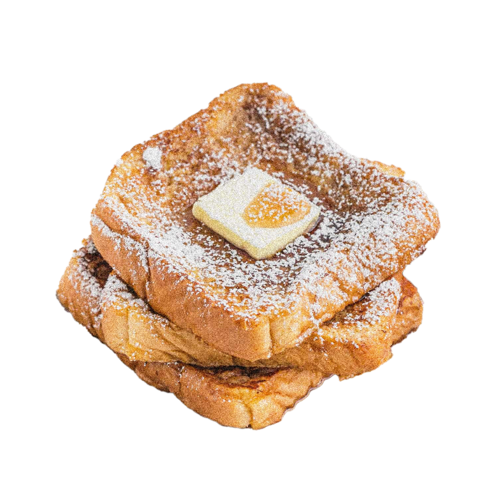

FrenchToast

Arguably one of the best breakfast foods or any-time-of-day foods. Can't go wrong with French toast. What makes it French? I'm not really sure.
According to Wikipedia, The usual French name is pain perdu meaning lost bread, reflecting its use of stale or otherwise "lost" bread.

- 1 teaspoon ground cinnamon
- 1/4 teaspoon ground nutmeg
- 2 tablespoons sugar
- 4 tablespoons butter
- 4 eggs
- 1/4 cup milk
- 1/2 teaspoon vanilla extract
- 8 slices brioche bread
- 1/2 cup maple syrup

- In a small bowl, combine cinnamon, nutmeg, and sugar and set aside briefly.
- In a 10-inch or 12-inch skillet, melt butter over medium heat. Whisk together cinnamon mixture, eggs, milk, and vanilla and pour into a shallow container such as a pie plate. Dip bread in egg mixture. Fry slices until golden brown, then flip to cook the other side. Serve with syrup.